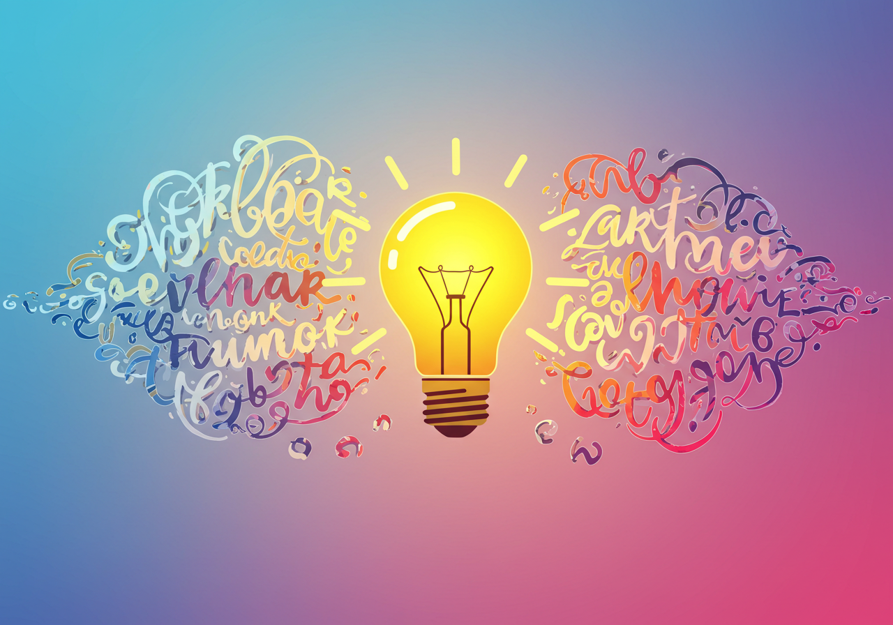

君だけのクリエイティビティを形にする
優れたデザインは、単に見た目が美しいだけではありません。それは論理的な思考と明確な目的から生まれます。最初のステップは、君がWebサイトを通して「誰に」「何を」「どう伝えたいか」を定義することです。これを怠ると、方向性のないデザインになり、見る人に何も響きません。
自己紹介サイトの「ターゲット」とは、そのサイトを見てほしい相手のことです。例えば、大学の入試担当者、将来の就職先、または新しい仲間かもしれません。ターゲット像が明確になれば、サイトのトーンや言葉選び、見せるべきコンテンツが定まります。
ターゲットの中でも、実在する人物のように詳細に設定した仮想の人物像のことです。年齢、趣味、悩み、目的などを具体的に描き出すことで、デザインの方向性がよりシャープになります。
自分の個性や強みを表現するために、どのようなデザインにすべきか考えましょう。「シンプルでプロフェッショナル」「親しみやすくクリエイティブ」など、コンセプトを言葉で定義します。さらに、伝えるべき情報（経歴、スキル、作品）をどのように配置するか、コンテンツの構造を設計します。
ユーザーが求める情報に迷わずたどり着けるよう、Webサイト全体のコンテンツを構造化し、整理することです。優れたIAは、ユーザー体験（UX）を向上させるために不可欠な要素です。
コンセプトが固まったら、いよいよデザインツールを使って形にしていきます。この段階では、いきなり作り始めるのではなく、デザインの基礎原則を理解することが重要です。
フォントはWebサイトの印象を大きく左右します。コンセプトに合わせて、読みやすく、かつ個性を表現できるフォントを選びましょう。本文には可読性の高いフォントを、タイトルには少しデザイン性のあるフォントを使い分けるのが一般的です。
フォントの種類、サイズ、行間、文字間などを調整し、読みやすく、美しい文字組を追求する技術です。デザインの質を向上させる上で最も重要な要素の一つです。
配色計画（カラースキーム）は、Webサイトのブランドイメージを形成します。メインカラー、アクセントカラー、背景色を３色程度に絞り、統一感のあるデザインを目指しましょう。色の持つ心理的な効果も考慮すると、よりプロフェッショナルな印象を与えられます。
ウェブサイト全体で使用する色の組み合わせのことです。ブランドの雰囲気を伝え、視覚的な統一感を生み出すために、事前に計画的に決定します。
ユーザーにまず何を読んでもらいたいか、重要度に応じて要素を配置する技術です。タイトルのサイズを大きくする、重要なボタンを明るい色にするなど、強弱をつけることで、ユーザーの視線を意図した順序で導くことができます。
デザイン要素に優先順位をつけ、ユーザーに最も重要な情報が直感的に伝わるようにレイアウトを構築するデザイン原則です。
これらの原則を頭に入れながら、デザインツールを使って君のアイデアを具現化していきましょう！
完成した作品をクラスメイトと共有し、フィードバックを受けましょう。デザインに「正解」はありません。しかし、他者の視点から自分の作品を客観的に見ることで、新たな気づきや改善点が見つかります。
なぜこの色を選んだのか、なぜこの配置にしたのか。自分のデザインを言葉で説明することで、思考プロセスが整理され、今後のデザイン制作にも活かすことができます。
他の人の作品を見ることで、自分にはなかったアイデアやアプローチを発見できます。互いの作品から学び合い、デザインの引き出しを増やしましょう。
デザインは一度作って終わりではありません。フィードバックを元に改善を重ねる「反復」が、より良いデザインを生み出します。今日の経験は、その第一歩です。